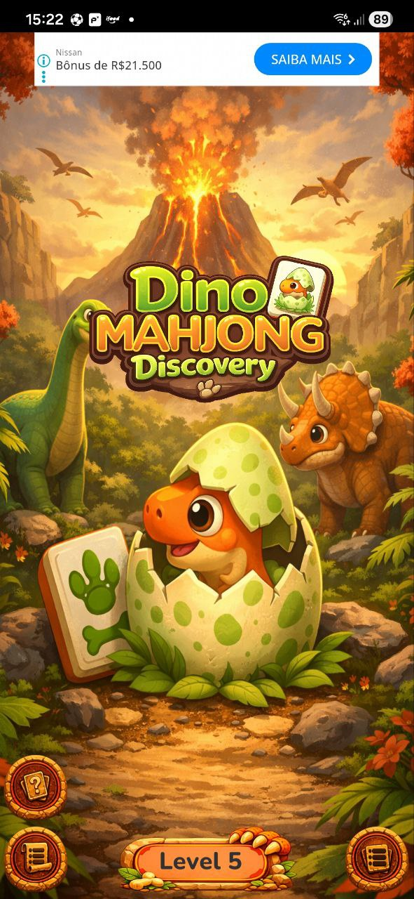
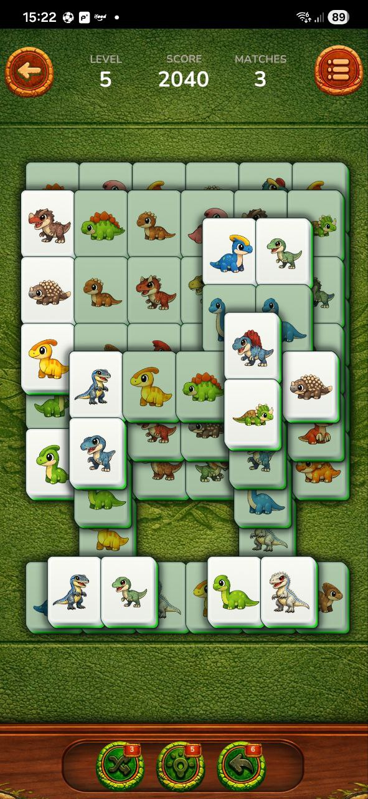

Um jogo divertido de mahjong com temática de dinossauros, combinando estratégia, descoberta e uma aventura jurássica cheia de personalidade.


Dino Mahjong Discovery é um jogo casual inspirado no clássico mahjong, onde os jogadores combinam peças em fases temáticas e desbloqueiam dinossauros incríveis ao longo da jornada.
Este jogo utiliza anúncios para ajudar a manter a experiência gratuita. Para mais informações, consulte nossa política de privacidade.
Ver Política de Privacidade